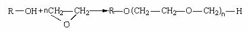

Reactii chimice ale compusilor organici
REACȚII CHIMICE ALE COMPUȘILOR ORGANICI:
REACȚII DE HALOGENARE:
Prin halogenarea unui compus aromatic (izociclic sau heterociclic) se înţelege procesul de introducere a unuia sau mai multor atomi de halogen (furnizaţi de un agent de halogenare) la atomi de carbon din molecula acestuia. Halogenii sunt elemente care în condiţii obişnuite sunt gaze sau se pot aduce uşor în stare gazoasă . Întrucât compusul aromatic poate avea în molecula şi catene alifatice laterale , saturate sau nesaturate , se disting dou ă tipuri de halogenări:
a)halogenare prin substituţie la nucleu sau in catena laterala saturata;
b)halogenare prin adiţie la nucleu sau la catena laterala nesaturata.
Halogenarea substitutiva la nucleul aromatic decurge , in conditii normale , printr-un mecanism heterolitic , de substituţie electrofilă , caracterizat prin heteroliza sau polarizarea agentului de halogenare sub acţiunea unor catalizatori electrofili sau a unor solvenţi polari. În urma acestor procese rezulta ioni de halogen pozitivi (X+) sau specii mai mult sau mai puţin polarizate (conţinînd X+) . Nucleul aromatic (nucleofilul) reacţionează cu aceste specii electrofile , cedând un proton celeilalte părţi a reactantului iniţial , ce apare sub formă de anion simplu sau complex.
1.Halogenarea prin reacții de substituție:
Halogenarea alcanilor:
Alcanii (parafine) sunt hidrocarburi saturate aciclice cu catena liniara si cu formula CnH2n+2, care conţin atomi de carbon in starea de hibridizare sp³. Cel mai simplu reprezentant al seriei fiind metanul cu formula CH4. Următorii termeni ai seriei omoloage sunt: C2H6 - etan C3H8 - propan C4H10 - butan.
Halogenarea în poziția alilică:
Un grup alilic este un substituent cu formula structurală H2C = CH-CH2R, unde R este conectarea la restul moleculei. Acesta este format dintr-un metilen (-CH2-), ataşat la un grup de vinil (-CH = CH2).
Halogenarea în poziția benzilică:
Termenul benzil se referă cel mai frecvent la compușii benzilic, cum ar fi clorura de benzil sau benzoat de benzil. Benzil, de asemenea, se referă la un radical liber cu formula C6H5CH2.
Halogenarea nucleului aromatic:
2.Halogenarea prin reacții de adiție: Adiţia halogenilor la alchene:
Adiţia halogenilor la alchine:
Adiţia halogenilor la la diene cu duble legături conjugate:
Adiţia halogenilor la benzen:
Adiţia hidracizilor la alchene:
Adiţia hidracizilor la alchine:
REACȚII DE ALCHILARE:
Procesul chimic prin care se înlocuiesc unul sau mai mulți atomi de hidrogen, în molecula unui compus organic, cu radicali alchil, R , se numește reacție de alchilare. În principal, acest proces se realizează pe urmatoarele căi:
a) Substituirea unui atom de hidrogen de la un atom de carbon aromatic, cu hibridizare sp2; de exemplu, alchilarea arenelor cu halogenuri de alchil sau cu alchene în prezența unui acid Lewis (clorură de aluminiu anhidră).
b) Substituirea unui atom de hidrogen de la un atom de carbon alifatic terțiar, cu hibridizare sp3, de exemplu , alchilarea izobutanului cu izobutena în cataliza acidă (acid sulfuric concentrat) pentru obținerea izooctanului.
c) Subtituirea unui atom de hidrogen legat de un alt atom decât cel de carbon cum este cazul alchilării aminelor sau a fenolilor. În primul caz se obțin amestecuri de amine (secundare și terțiare), ambii compuși fiind intermediari importanți în sinteza unor coloranți.
În cazul fenolilor, care participă la reacție sub forma de fenoxizi alcani, se obțin eteri micști ca, de exemplu, metil-fenil-eterul sau anisolul, folosit ca solvent.
1.Alchilarea arenelor:
Alchilarea arenelor cu compuși halogenați:
Alchilarea arenelor cu alchene:
2.Alchilarea aminelor:
3.Alchilarea cu oxid de etenă:
Alchilarea alcoolilor cu oxid de etenă:
-etoxilarea alcoolilor inferiori
-polietoxilarea alcoolilor graşi

REACȚII DE POLIMERIZARE ȘI COPOLIMERIZARE:
1.Reacția de polimerizare:
În chimie, polimerizarea este un tip de reacție chimică în urma căreia se obțin produși macromoleculari, ea reprezentând o reacție de adiție multiplicată de un număr n foarte mare.
2.Reacția de copolimerizare a butadienei cu monomeri vinilici:
REACȚII DE ESTERIFICARE:
REACȚII DE HIDROLIZA:
1.Hidroliza compușilor halogenați:
2.Hidroliza esterilor:
-în mediul acid
-în mediul bazic
REACȚII DE CONDENSARE ȘI POLICONDENSARE:
Condensarea compușilor carbonilici între ei: